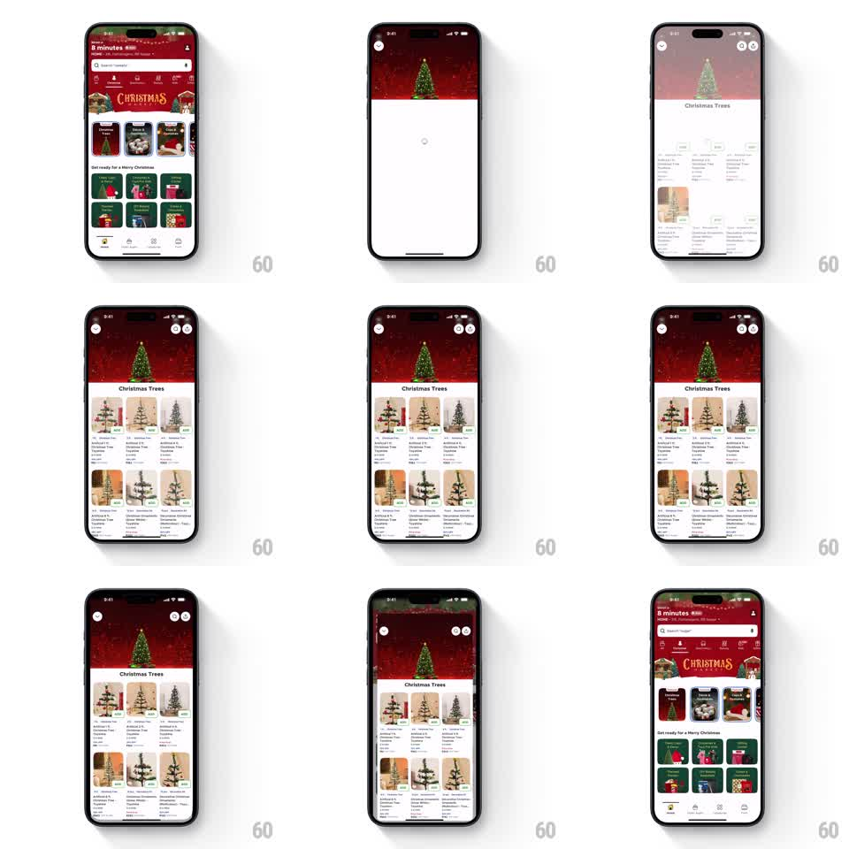

Media
Frame-by-frame

Rebuild this interaction 1:1: Blinkit's shared-element category transition - tapping the Christmas Trees card on the home screen stretches its tree banner into the category page hero, and going back shrinks it home again.

Rebuild this interaction 1:1: Blinkit's shared-element category transition - tapping the Christmas Trees card on the home screen stretches its tree banner into the category page hero, and going back shrinks it home again. ## Integration Integration: stack-agnostic spec - springs given as stiffness/damping, timed motions as duration + curve; map every value to your framework and animation library of choice. ## Scene Blinkit's red holiday home screen: delivery time pill, search bar, and a grid of category cards including one topped with a Christmas tree banner. Tapping it opens the "Christmas Trees" category: the same tree banner artwork becomes the page's full-width hero, with a product grid of tree listings below (photos, prices, weight selectors). Closing the page reverses the move - the hero folds back into the home screen's category card exactly where it started. ## Motion spec Pattern: shared-element expand/collapse, ~450ms each way. - On tap, the banner image detaches and grows from the card's bounds to the full-width hero (spring stiffness 300 damping 30), its corners and crop interpolating smoothly - one element, two layouts. - The category title "Christmas Trees" fades in beneath the hero (200ms) as the product grid rises and staggers in (rows 60ms apart, 300ms each) - a brief spinner holds the space before content lands. - The home screen recedes behind, dimming slightly during the transition. - On back, the grid and title fade out first (150ms), then the hero shrinks back into the card slot (spring stiffness 320 damping 28) as the home screen restores. ## Calibration - The banner is pixel-identical in both places - scale and corner radius morph, the artwork never swaps. - The product grid populates after the hero lands, not during. ## Reduced motion Crossfade between home and category. ## Don't miss - The reverse transition is a true mirror - the hero lands precisely on the card it came from. - The red brand header and delivery pill stay visible only on the home screen.